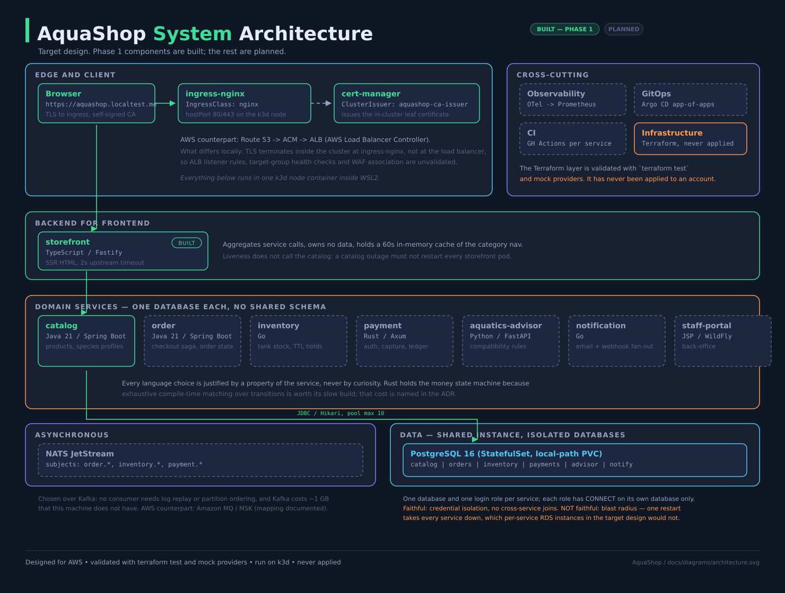
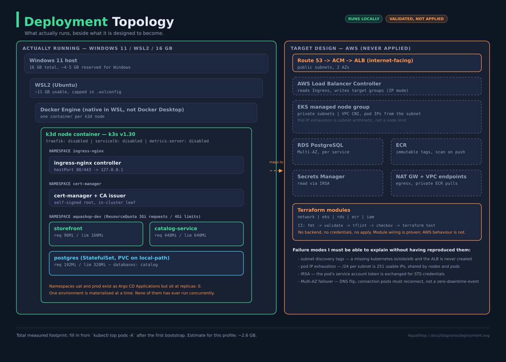
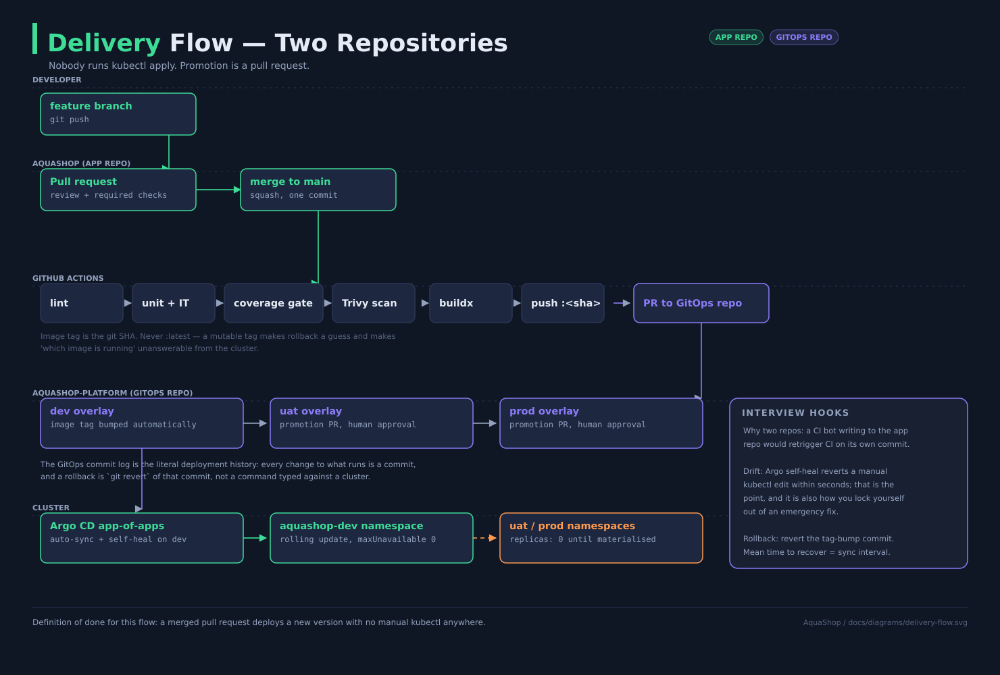

The AWS infrastructure layer in this repository has never been applied to an AWS account. It is written as production-quality Terraform and validated in CI with fmt, validate, tflint, checkov and terraform test against mock providers. That proves module composition, variable contracts and policy compliance. It does not prove AWS behaviour.
The runtime is a single-node k3d cluster inside WSL2 on a 16 GB laptop. Every diagram in this document carries AWS labels because AWS is the target platform, and every place where the local setup diverges from that target is named in the local-to-cloud section rather than glossed over.
The short version, said out loud without hedging: "I built it AWS-first and ran it locally because I was paying for it myself."
AquaShop sells live freshwater fish, shrimp, plants, hardscape, equipment and food, with a full care profile published for every living species before purchase. The domain was chosen because live livestock imposes constraints a generic shop demo does not have, and each constraint forces an architectural decision that is worth defending in an interview.
| Perishable stock | Livestock ships only inside a safe weather window, so an order can be confirmed but not yet shippable. The order state machine has a waiting state that a normal shop does not, and it is time-driven rather than event-driven. |
| Stock per tank | Stock is held per physical tank, not as one integer. Reservations are tank-scoped, time-bounded and idempotent, which is a distributed-systems problem (TTL expiry, retry safety) rather than a decrement. |
| Compatibility | Species are not mutually compatible. That is a rules engine over water parameters and temperament, not CRUD — which is what justifies a separate service with a different language and a different change cadence. |
| Water parameters | pH, dGH and temperature ranges must overlap across every inhabitant. Interval intersection over a set, evaluated against tank volume. |
| DOA claims | High-value livestock sometimes arrives dead, so there is a claims workflow with photo evidence and a compensating refund path — a real saga compensation, not a contrived one. |
| Service | Stack | Why this stack |
|---|---|---|
| catalog-service | Java 21 / Spring Boot | Read-heavy relational data with a rich schema; the ecosystem I know best, so the platform work is the novel part. |
| order-service | Java 21 / Spring Boot | Long-lived transactional orchestration; mature saga and scheduling libraries. |
| inventory-service | Go | Many small concurrent hold/expire operations; a small footprint suits a service that scales on request count. |
| payment-service | Rust / Axum | Smallest surface, strictest correctness: exhaustive compile-time matching, non-wrapping arithmetic. Cost: slowest CI, smallest maintainer pool. |
| aquatics-advisor | Python / FastAPI | Rules and range logic that changes often, edited by domain people, not platform people. |
| notification-service | Go | Planned, not built. I/O-bound fan-out to email and webhooks. |
| staff-portal | JSP / WildFly | Planned, not built. A slow-starting WAR — the exercise that connects this to production work. |
| storefront | TypeScript / Fastify | A BFF is I/O aggregation; server-rendered HTML avoids a client state layer that proves nothing. |



16 GB of physical RAM on the laptop. The design targets 11 GB usable inside WSL2 via a .wslconfig memory override, but that override has never been applied on this machine — /proc/meminfo measures 7.4 GB, WSL2's unconfigured default of roughly half of host RAM. The full platform does not fit at once either way, so the cluster is built as profiles: named subsets brought up for a purpose. This is not a workaround bolted on at the end; it is why NATS replaced Kafka, why one Postgres instance hosts per-service databases, and why only one environment is materialised at a time.
| Profile | Adds | Total |
|---|---|---|
| core | k3d, ingress-nginx, cert-manager, Postgres, catalog, storefront | 1.32 GiB measured |
| commerce | order, inventory, payment, advisor, NATS | ~2.05 GiB measured* |
| full-app | notification, staff-portal (WildFly) | ~5.2 GB estimate |
| platform | Argo CD | ~6.1 GB estimate |
| observability | kube-prometheus-stack, OTel collector, Tempo, prometheus-adapter | ~9.2 GB estimate |
*NATS not deployed yet by bootstrap.sh --profile commerce (planned for Phase 6); the commerce figure is the four services alone. core+commerce came in well under their old estimates — core at 1.32 GiB against a ~2.6 GB estimate, commerce adding ~730 MiB against a ~4.2 GB additive estimate.
Rule enforced by the bootstrap script: never build images while the observability profile is up. ~1.8 GB of headroom (against the intended 11 GB ceiling) does not survive a Maven or Cargo build, and the failure mode is the kernel OOM killer taking an unrelated pod.
The observability estimate (~9.2 GB) does not fit inside the current, unconfigured 7.4 GB WSL2 ceiling at all — even alone, let alone alongside core. It does fit the intended 11 GB one. This gap was invisible while every figure in this table was an unmeasured estimate sitting against an unmeasured ceiling; it is visible now that core and commerce are real numbers. Closing it means editing .wslconfig on the Windows side and wsl --shutdown — not done on this machine yet.
| NATS JetStream instead of Kafka |
No consumer in this system needs log replay or partition ordering, and Kafka costs ~1 GB this machine does not have. Cost: no partition-key ordering, a smaller tooling ecosystem, and MSK is a heavier migration than the mapping suggests. |
| One Postgres, database per service |
Separate databases and login roles, each with CONNECT on its own database only. Saves ~1.1 GB. Cost: blast-radius isolation is lost — one restart takes every service down, which per-service RDS instances would not. Credential isolation and the no-shared-schema rule are unaffected. |
| One environment materialised at a time |
dev, uat and prod are real Argo CD Applications; two of them sit at replicas: 0. Cost: no environment has ever run concurrently with another, so cross-environment concerns are untested. Say "three overlays under GitOps, one materialised", never "I ran prod". |
| No CPU limits on JVM services |
A CPU limit means CFS throttling: once the container exhausts its quota it is stopped for the remainder of each 100 ms period, which appears as latency spikes while the node looks idle. Memory is limited because memory is not compressible. Cost: a runaway pod can starve its neighbours; the ResourceQuota is the backstop. |
The full mapping document covers every component, the Terraform that would provision it, and the traffic path end to end. This page is the Phase 1 extract: what is faithful, and what I have therefore not validated.
| Local | AWS counterpart | Terraform module → consumer | Faithful | Not faithful — and what that means |
|---|---|---|---|---|
| k3d node container | EKS managed node group | eks → outputs cluster_endpoint, oidc_provider_arn; consumed by iam and the addons module | Kubernetes API behaviour, scheduling, probes, quotas, RBAC | Single node, so PodDisruptionBudgets, anti-affinity and node drains are configured but never exercised. Pod IPs come from a Docker bridge, not from VPC subnets, so VPC CNI IP exhaustion cannot occur here. |
| ingress-nginx hostPort | ALB + AWS Load Balancer Controller | network → public_subnet_ids; consumed by the controller through subnet discovery tags | Ingress objects, path routing, ingress class, nginx timeouts | No target groups, no cross-zone balancing, no deregistration delay. A missing kubernetes.io/role/elb tag silently produces no load balancer — I can explain it, I have not hit it. |
| cert-manager self-signed CA | ACM certificate on the ALB | acm → certificate_arn; consumed by the Ingress annotation | Certificate lifecycle, secret mounting, renewal mechanics | TLS terminates inside the cluster here and at the load balancer in the target. Cipher policy, SNI and WAF association are untested. |
| Postgres StatefulSet + local-path PVC | RDS PostgreSQL, Multi-AZ | rds → endpoint, port, secret_arn; consumed by the app Helm values and IRSA policy | Schema, Flyway migrations, connection pooling, credential isolation per service | No failover, no automated backup, no parameter groups. The volume is node-local, so the "volume follows the pod" property of EBS does not exist. Multi-AZ failover is a DNS flip that pools must survive — explainable, not reproducible. |
| Plaintext Secret in Git | Secrets Manager read via IRSA | iam → irsa_role_arn; consumed by the ServiceAccount annotation | Nothing yet — this is a Phase 1 placeholder | The single largest gap in the repository today. Phase 5 replaces it with External Secrets + SOPS. Until then this is stated as a known limitation, not presented as a design. |
| Local image import into k3d | ECR with immutable tags | ecr → repository_urls; consumed by CI and the deployment image field | SHA-tagged images, no :latest, scan-on-build via Trivy | No registry authentication, no pull-through cache, no VPC endpoint for private pulls, no lifecycle policy for untagged images. |
Stock held per physical tank, not one integer per SKU. Availability = on_hand − Σ holds WHERE expires_at > now() — the deadline is in the query, so the reaper is bookkeeping, not load-bearing.
Locks are taken in one statement, availability read in a second: under READ COMMITTED a single combined statement reads a stale snapshot and oversells — the concurrency test (20 goroutines, 8 fish, 2 at a time) caught exactly that.
Measured locally: 13.9 MiB idle, 17.0 MiB after 200 reservations, 2.5 ms mean, zero oversells across 300 concurrent reservations. Now also run in k3d: 3 MiB resident — idle during the smoke test, not under sustained load.
Smallest surface, strictest correctness: every ledger transition is an exhaustive match with no catch-all arm. The unknown — acquirer took the money and never answered — is a state in both services, never collapsed into success or failure. The intent row is written before the acquirer is called, so a mid-call death still leaves a findable record.
Measured: 6 MiB resident locally, 2 MiB in k3d, against 361/224 MiB for order-service doing comparable work. 18 gated database tests (cargo test, needs PAYMENTS_TEST_DSN) now cover its CHECK constraints, append-only trigger and race-losing conditional update — previously exercised only by hand. The acquirer itself is still a stub: no partial captures, no chargebacks, no 3-D Secure, no settlement.
Four steps, no distributed transaction: reserve → authorise → commit → confirm, each with its own compensation. Stock is held before money is taken — a declined card costs a released hold; the reverse ordering costs a refund and an apology. There is no PAID → PAYMENT_FAILED transition: the worst outcome is unreachable, not just unlikely.
Not proven: the saga is not crash-safe.
Closed. SagaRecovery scans for orders stuck in
PAID/STOCK_RESERVED and finishes them —
demonstrated with a real kill -9 mid-checkout. A state scan, not an
outbox (ADR 0018, amends 0015).
Live in k3d, 16 Sep 2026: a full checkout through the ingress-internal saga — reserve, authorise, commit, confirm — ended CONFIRMED with a correct dispatch window. Talks to the real payment-service over HTTP; the stub gateway was retired at Phase 4.
The rules change weekly, the code rarely — so thresholds live in rules.yaml with a plain-English justification per line, quoted back to the customer. It owns no species data of its own; a local copy would drift the first time somebody corrects a pH range.
Three verdicts, not two: a refusal (no overlap), a caution (narrow overlap), or a pass. Not proven: nothing tests the HTTP layer or the catalog client, and the image is python:3.11-slim rather than distroless.
Every prior session verified this repository against a local Postgres, never in a cluster, because no session before 16 September 2026 had a Docker daemon. This one did. core came up first, commerce followed the same day, and a live checkout ran the full saga in-cluster. None of the three defects below was caught by review — each only exists once the actual container runs.
All six deployments sat in CreateContainerConfigError on core's first rollout. The distroless :nonroot images set USER nonroot — a name, not a UID — and runAsNonRoot: true alone gives kubelet nothing numeric to verify without running the container first. Fix: runAsUser: 65532 / runAsGroup: 65532 added explicitly to every pod securityContext.
go.mod declared go 1.25.0; the Dockerfile pinned golang:1.24-bookworm. go mod download refused to run. Fix: bumped to golang:1.25-bookworm.
Cargo.lock resolved home v0.5.12, whose manifest needs Cargo's edition2024 feature (stabilized in Rust 1.85) — stricter than the crate's own declared rust-version = "1.82", which the pinned rust:1.82-bookworm builder matched but could not satisfy. Fix: bumped to rust:1.90-bookworm.
mvn/go build/cargo build run locally against whatever toolchain happens to be installed, so neither toolchain defect had ever been visible before — only docker build against the pinned image actually enforces the version a Dockerfile claims.
From a temporary curlimages/curl pod inside the namespace (order-service is intentionally not exposed through the public ingress): create a cart, add a line (INV-AMA-01, Amano Shrimp × 2), checkout with an Idempotency-Key.
| Result | 201 |
| Order state | CONFIRMED |
| Reservation | COMMITTED |
| Dispatch | 2026-09-21T14:00+05:30 |
| Audit trail | PENDING → STOCK_RESERVED → PAID → CONFIRMED |
Dispatch window is the next Monday after the Thursday cut-off — the shipping-calendar rule working against a real clock. inventory-service correctly reflected the sale afterward (held: 0, onHand reduced).
| catalog-service | JVM, 640Mi limit | 215 MiB |
| order-service | JVM | 224 MiB |
| storefront | Node | 30 MiB |
| aquatics-advisor | Python/FastAPI | 43 MiB |
| inventory-service | Go | 3 MiB |
| payment-service | Rust | 2 MiB |
| postgres | 59 MiB | |
| ingress-nginx | 184–189 MiB |
215/224 MiB are the first honest in-cgroup JVM numbers in this repository (MaxRAMPercentage=70, not host RAM). The two smallest figures reflect idle pods during a smoke test, not sustained load.
| Phase 6 | Observability (OTel, RED + business metrics, burn-rate alerts) and the delivery layer (Argo CD app-of-apps across dev/uat/prod). NATS arrives, and notification-service moves from ADR 0020's fire-and-forget HTTP push to a real subscription. Saga crash-recovery is already closed without an outbox (ADR 0018); an outbox still arrives here, but for reliably publishing domain events to NATS, not for crash-safety. |
| Phase 7 | The full local-to-cloud document (only the Phase 1 extract exists today) and remaining Terraform hardening: NetworkPolicies, PDBs, HPA on a custom RPS metric. |
| full-app | notification-service and staff-portal (WildFly) — planned, no code or manifests exist yet. |